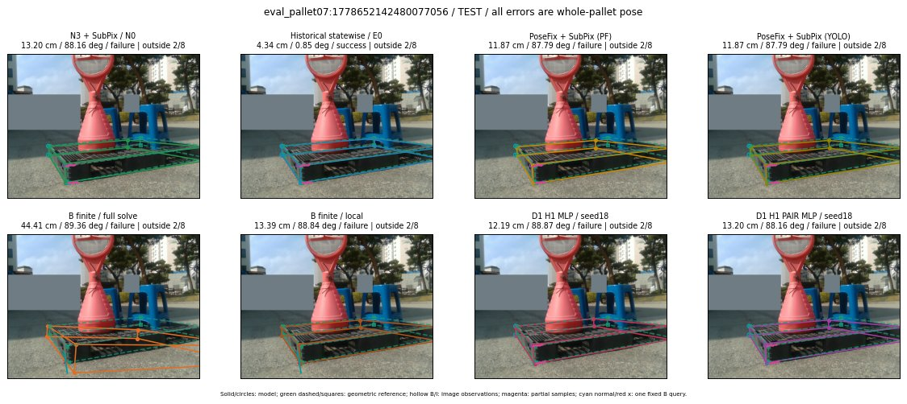

Whole-pallet pose errors; reference is a fixed geometric annotation, not certified physical GT.

Scores are uncalibrated logits. N0 retention is a numerical pose alias; it differs from H0 none or B fallback. B/I and profiles in baseline/B panels are original observations; L panels use new D1 observations. Only one deterministic supported B query is shown in a thumbnail; full support counts are below. Grey privacy rectangles edit the display copy only and are unrelated to O states; all observations were measured on original pixels. Thumbnails use JPEG quality85; detailed scientific panels are PNG.
| Method | Whole pose / cm, deg | Actual source | Selected ID | Score | Archived candidates | Eligible | N0 retained | H0 none | Fallback | Finite profiles |
|---|---|---|---|---|---|---|---|---|---|---|
| Raw YOLO + F | 13.55 cm / 87.89 deg / failure | OTHER | None | N/A | N/A | N/A | False | N/A | None | N/A |
| N3 + SubPix / N0 | 13.20 cm / 88.16 deg / failure | N0 | None | N/A | N/A | N/A | True | N/A | None | N/A |
| Historical statewise / E0 | 4.34 cm / 0.85 deg / success | E0_REGENERATED | None | N/A | N/A | N/A | False | N/A | False | N/A |
| PoseFix raw | 12.04 cm / 87.95 deg / failure | OTHER | None | N/A | N/A | N/A | False | N/A | None | N/A |
| PoseFix + SubPix (PF) | 11.87 cm / 87.79 deg / failure | OTHER | None | N/A | N/A | N/A | False | N/A | False | historical support records 9; finite audit N/A |
| PoseFix + SubPix (YOLO) | 11.87 cm / 87.79 deg / failure | OTHER | None | N/A | N/A | N/A | False | N/A | False | historical support records 9; finite audit N/A |
| Historical L, seed18 | 13.20 cm / 88.16 deg / failure | N0 | N0 | N/A | 38 | 38 | True | True | True | N/A |
| Historical B fixed bank | 4.75 cm / 1.04 deg / success | OTHER | G10/SWAPPED_WD/sample/0 | N/A | N/A | N/A | False | N/A | False | N/A |
| Historical B full | 38.96 cm / 89.62 deg / failure | OTHER | NEW/B/ORIGINAL_WD/h2/G10/SWAPPED_WD/sample/2/PROPOSED_NATIVE_YAW_2 | N/A | N/A | N/A | False | N/A | False | N/A |
| Historical edge full | 42.16 cm / 89.66 deg / failure | OTHER | NEW/edge/ORIGINAL_WD/h0/LOGGED/G13/ORIGINAL_WD/outline_consider/17/PROPOSED_NATIVE_YAW_0 | N/A | N/A | N/A | False | N/A | False | N/A |
| Historical AB full | 38.11 cm / 89.33 deg / failure | OTHER | NEW/AB/ORIGINAL_WD/h0/LOGGED/G13/ORIGINAL_WD/outline_consider/17/PROPOSED_NATIVE_YAW_0 | N/A | N/A | N/A | False | N/A | False | N/A |
| B finite / fixed bank | 4.75 cm / 1.04 deg / success | OTHER | G10/SWAPPED_WD/sample/0 | N/A | N/A | N/A | False | N/A | False | 2/2 |
| B finite / full solve | 44.41 cm / 89.36 deg / failure | OTHER | NEW_FINITE/B/ORIGINAL_WD/h0/LOGGED/G13/ORIGINAL_WD/outline_consider/17/PROPOSED_NATIVE_YAW_0 | N/A | N/A | N/A | False | N/A | False | 2/2 |
| B finite / local | 13.39 cm / 88.84 deg / failure | OTHER | NEW_FINITE/B/ORIGINAL_WD/h0/N0_LOCAL_SAME_PHYSICAL_POSE/ORIGINAL_WD | N/A | N/A | N/A | False | N/A | False | 2/2 |
| Edge finite / full solve | 42.35 cm / 89.68 deg / failure | OTHER | NEW_FINITE/edge/ORIGINAL_WD/h0/LOGGED/G13/ORIGINAL_WD/outline_consider/17/PROPOSED_NATIVE_YAW_0 | N/A | N/A | N/A | False | N/A | False | 2/2 |
| D0 H0 MLP / seed18 | 13.20 cm / 88.16 deg / failure | N0 | N0 | 1.340807318687439 | 15 | 15 | True | True | True | N/A |
| D0 H0 MLP / seed19 | 13.20 cm / 88.16 deg / failure | N0 | N0 | 1.3965904712677002 | 15 | 15 | True | True | True | N/A |
| D0 H0 MLP / seed20 | 13.20 cm / 88.16 deg / failure | N0 | N0 | -1.1386618614196777 | 15 | 15 | True | True | True | N/A |
| D0 H1 MLP / seed18 | 12.19 cm / 88.87 deg / failure | OTHER | G13/ORIGINAL_WD/endpoint/17 | -1.1079570055007935 | 15 | 15 | False | False | False | N/A |
| D0 H1 MLP / seed19 | 12.19 cm / 88.87 deg / failure | OTHER | G13/ORIGINAL_WD/selected | -1.4621955156326294 | 15 | 15 | False | False | False | N/A |
| D0 H1 MLP / seed20 | 12.19 cm / 88.87 deg / failure | OTHER | G13/ORIGINAL_WD/endpoint/17 | -2.3861618041992188 | 15 | 15 | False | False | False | N/A |
| D1 H0 MLP / seed18 | 13.20 cm / 88.16 deg / failure | N0 | N0 | 5.962645530700684 | 15 | 15 | True | True | True | N/A |
| D1 H0 MLP / seed19 | 13.20 cm / 88.16 deg / failure | N0 | N0 | 5.734274864196777 | 15 | 15 | True | True | True | N/A |
| D1 H0 MLP / seed20 | 13.20 cm / 88.16 deg / failure | N0 | N0 | 5.337939739227295 | 15 | 15 | True | True | True | N/A |
| D1 H1 MLP / seed18 | 12.19 cm / 88.87 deg / failure | OTHER | G13/ORIGINAL_WD/endpoint/17 | 0.6654801368713379 | 15 | 15 | False | False | False | N/A |
| D1 H1 MLP / seed19 | 12.19 cm / 88.87 deg / failure | OTHER | G13/ORIGINAL_WD/endpoint/17 | 0.31107383966445923 | 15 | 15 | False | False | False | N/A |
| D1 H1 MLP / seed20 | 12.19 cm / 88.87 deg / failure | OTHER | G13/ORIGINAL_WD/endpoint/17 | 0.8245999813079834 | 15 | 15 | False | False | False | N/A |
| D1 H1 ROLE AFFINE / seed18 | 13.20 cm / 88.16 deg / failure | N0 | N0 | 0.6249927282333374 | 15 | 15 | True | False | False | N/A |
| D1 H1 ROLE AFFINE / seed19 | 13.20 cm / 88.16 deg / failure | N0 | N0 | 0.17885491251945496 | 15 | 15 | True | False | False | N/A |
| D1 H1 ROLE AFFINE / seed20 | 13.20 cm / 88.16 deg / failure | N0 | N0 | 0.6171493530273438 | 15 | 15 | True | False | False | N/A |
| D1 H1 PAIR MLP / seed18 | 13.20 cm / 88.16 deg / failure | N0 | N0 | -0.7916237711906433 | 15 | 2 | True | False | False | N/A |
| D1 H1 PAIR MLP / seed19 | 13.20 cm / 88.16 deg / failure | N0 | N0 | -0.22476880252361298 | 15 | 2 | True | False | False | N/A |
| D1 H1 PAIR MLP / seed20 | 13.20 cm / 88.16 deg / failure | N0 | N0 | 0.4152437746524811 | 15 | 2 | True | False | False | N/A |
| D1 H1 PAIR ROLE AFFINE / seed18 | 13.20 cm / 88.16 deg / failure | N0 | N0 | 0.13744652271270752 | 15 | 2 | True | False | False | N/A |
| D1 H1 PAIR ROLE AFFINE / seed19 | 13.20 cm / 88.16 deg / failure | N0 | N0 | 0.09448926895856857 | 15 | 2 | True | False | False | N/A |
| D1 H1 PAIR ROLE AFFINE / seed20 | 13.20 cm / 88.16 deg / failure | N0 | N0 | 0.10185834765434265 | 15 | 2 | True | False | False | N/A |
| Regenerated common E0 | 4.34 cm / 0.85 deg / success | E0_REGENERATED | E0_REGENERATED | N/A | N/A | N/A | False | N/A | False | N/A |